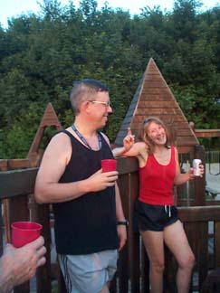

Run # 792
July 9, 2001
Hare: Short Peck
Scribe: The Slasher Dr WHO
Where: Cumberland Hill
The Weather: 80's, Humid
Present: Basket Boom Boom, Bondo Jovi, Async, WIPOS, Dr. WHO, PW, Oozing SD, Shine On HM
Management: Jake,
Ben, Baxter, Zoe
Commemorating: "Reed Dance Day",
Swaziland.
The hare marked his return to the active hare list after years of sponging free
beers off the long-suffering RIH3, with the proper spirit, showing genuine
reverence for tradition by giving totally incompetent directions to the start.
The ten virgins invited by Dr WHO, all college
girls between the ages of 21 and 23, all got lost, and ended up skinny-dipping
in nearby Sneech Pond. But the regulars all made it in a reasonable time. Most
applied various concoctions designed to ward off poison ivy, and/or bugs; about
as effective as taking the money they had spent on these lotions, rubbing it
twice on their legs, and then inserting it into their nose. (Actually, this is
exactly what Bondo did.) At the precise stroke of 6:39, they were off.
|
Hare Short Peck |
Hare co-conspirator Basket Boom Boom (his better side) |
A check five yards away from the cars provided some appropriate confusion to the
immense enjoyment of the local picnickers, but soon the trail was found at the
southern corner of the playing fields. Through some bushes, then onto roads
generally heading southeast down the hill. It became clear that Short
Peck had set much of the trail before the rainfall on Sunday. The
subsequent heat had baked the moistened flour into excellent unleavened matzo
crackers, providing sustenance to the dieting Bondo
as well as a feast of religious significance to the interfaithful PW.
Soon the trail led back into the woods next to a house where a hysterical dog
and his irate mistress yelled at the group to be quiet. This of course
stimulated a variety of auditory responses including a Tarzan yell from Oozing,
an official 'piping-the-Admiral-aboard' salute on Dr. WHO's
bosun's pipe, and a flatulated Hallelujah chorus from Basket,
who had forgotten his bugle.
Async led to the banks of the mighty Blackstone River, where a path overgrown
with poison ivy and nettles led northwest. WIPOS
and Oozing found an area with dried mud with a
distinctly fecal odor. Another opportunity for excellence ruined by the
persistent good weather that has plagued this hash for the last few months. When
will it end?! WIPOS, clothed once again in his
usual environmental armor, rolled in it for a while hoping to bring back
memories, but to no avail.
After an all too brief sojourn in the woods, trail came out by a sawmill, and
then, back on the macadam to an old folks home. Bondo,
a gleam in his eye for some of the matrons on the shuffleboard court, puffed out
his chest, and slowed down, waiting for catcalls. Basket,
rocked for a while on the porch, trading surgical stories and prostatic woes
with the gentlemen. The remainder ran in confusion around the parking lot,
provoking two heart attacks, a minor stroke, and several episodes of
incontinence. Finally out to Manville Road, across the street into the Manville
Quarry, where the beer stop was found near the river landing area used in Hash
#782.
Hashers admiring
their reflection on Short Peck's head
The beer was an uneasy mix of Trinity brew with Bondo
brew, with a few too many hops in the wort for a sensitive stomach. Short
Peck, in an effort to live up to his name and lineage, provided shrimp
and cocktail sauce. Seeing the group genteelly eating their shrimp and sipping
porter, passers-by mistook the hash for The Manville Ornithological Society, and
stopped to ask if they had any extra cucumber sandwiches. PW
was mortified, and launched into a graphic description of his son's
circumcision, using a shrimp as a visual aid. Naturally "When I was eight
days old..." followed. Onwards they went, back on trail towards the quarry.
A flour shortage in the quarry sent Bondo and WIPOS
shortcutting up a vertical slope of loose scree to the top of the thirty foot
cliff in the hope that they could urinate on the group below. Cries of
"Jump, Bondo, jump!" were ignored, and
the rest followed trail up to the top at a more reasonable grade. In the woods,
the ruins of an Aztec temple was encountered (as so often happens this close to
Woonsocket). Hidden in its caves were members of the Cumberland High School
Making-Noises-Like-Barnyard-Animals Junior Varsity team, having a practice. They
were readying an attack on the hashers, thinking that they were corresponding
members of the Mount St. Charles squad, but Shine On's
attempt at imitating a cock crow convinced them that they had nothing to worry
about. Northeast halfway to the top of the hill, east to Manville road again,
then up through woods consisting of seven bushes and a sickly swamp maple tree
to the back of the playing fields at the starting point. Total: maybe three
miles, 0.5 in woods, one pathetic scratch on PW's leg, 7 vesicles of poison ivy
on Dr WHO, and dry shoes all around. No wonder Short Peck
hasn't hared for years.

Shine On
admonishing Dr Who for breaking wind again
The ceremony was held in the children's playground (appropriately enough) after
bullying a few of the tykes home crying to their mothers ("Gwan,
gedaddahere!' snarled Oozing at a teary-eyed but
spunky 6 year old girl, as he stole her lunch box and kicked her off the
swings.) A circle was joined around a pile of tires on a platform with an escape
hatch beneath. The hare received the usual charitable scores. (This I believe,
is because the list of hares keeps shrinking, and we can't afford to offend
anyone except Basket, and we can't seem to offend
him anyway no matter how hard we try.) Bondo brought
water and baptized the hare, as the group watched the sun set, reflected
beautifully in his moistened pate. Basket, as
co-hare took his place in the circle and stripped to his worn speedo underwear,
provoking a wave of nausea in the group which, along with his urination aimed at
Bondo, brought the circle to a quick end. Swinging low by a picnic table,
they moved on to Short Peck's apartment.
Now you know why
we call him Short Peck
While WIPOS and Shine On
fought to counteract the nausea provoked by the all-too familiar sight of a
naked Basket with exotic South American medication,
the rest moved upstairs where pizza was ordered, darts were played inside while
building codes were violated on the terrace, beer was spilled on the receding
hareline and carpet, and music was played on the TV. Seven hours later the pizza
arrived, and the skeletal remains of the starving bunch crawled weakly to the
door and were sustained. The first hash in months without a virgin or visitor,
and our record remains proud and true: no one comes back for seconds after
running with us!
On On
The Slasher Dr. W.H.O.